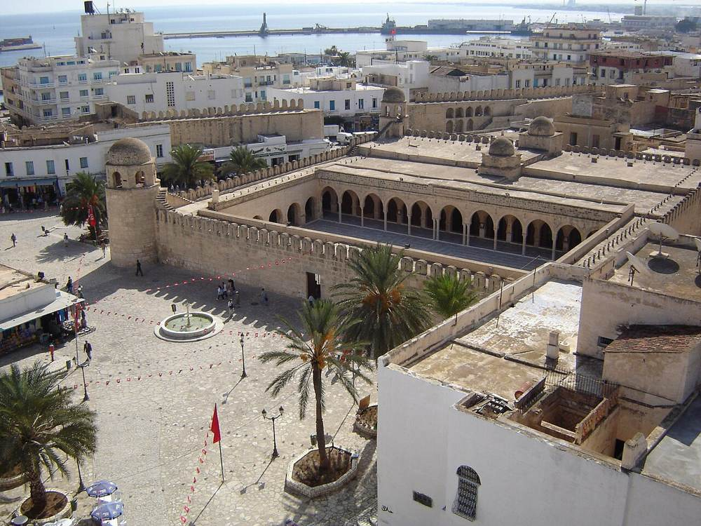
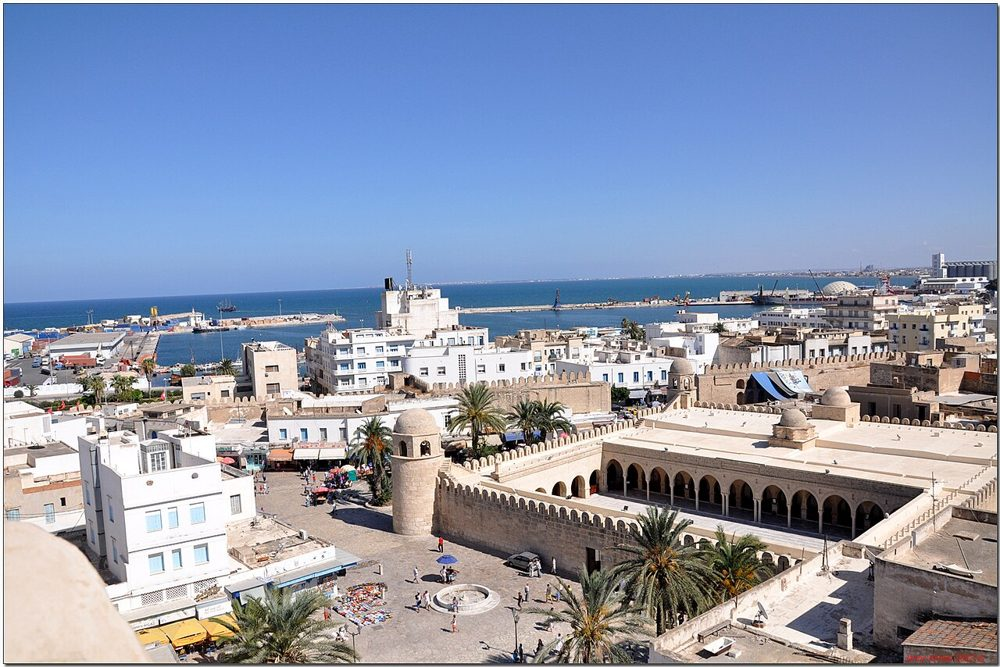
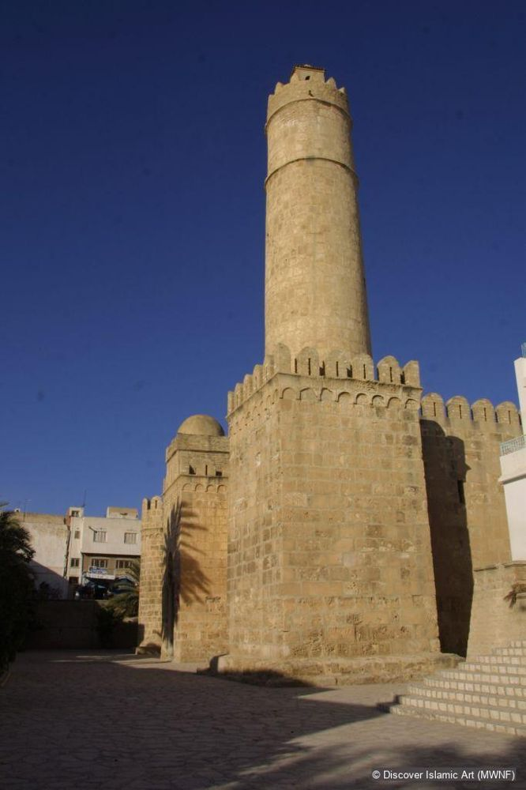
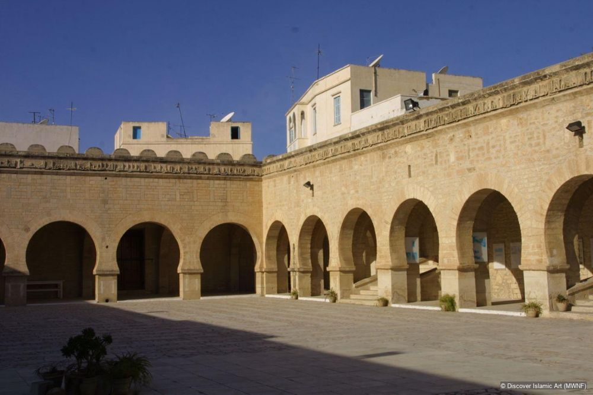
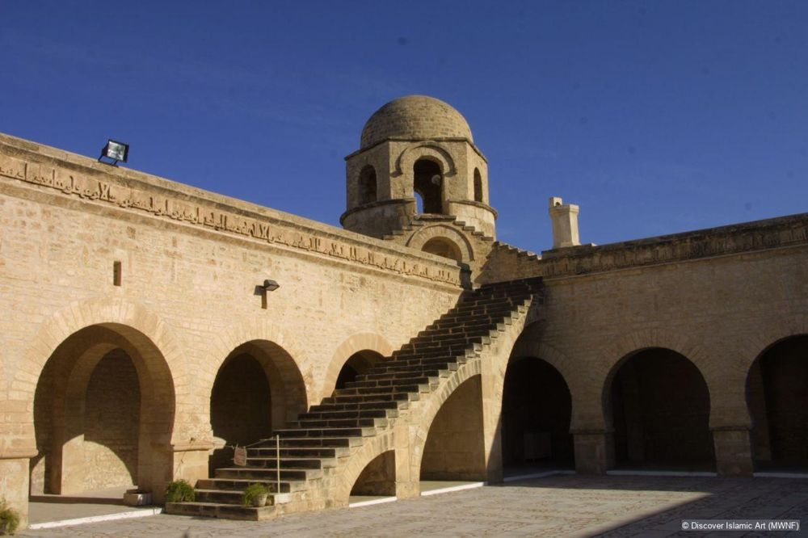

परिचय
मदीना के प्रवेश पर, क़िले जैसी दिखने वाली मस्जिद, जो 851-862 में उस रिबात के पास बनी जो तट की हिफ़ाज़त करता था। सादी और मज़बूत, यह सूसा की मदीना का हिस्सा है, जो यूनेस्को की विश्व धरोहर है।
तस्वीरें







इतिहास
इसे 851-862 में अग़लबी अमीर अबुल अब्बास मुहम्मद ने बनवाया, सूसा के रिबात के लगभग तीस साल बाद; आँगन के दालानों पर कूफ़ी लिपि का एक शिलालेख इसके निर्माण की याद दिलाता है। अमीर इब्राहीम द्वितीय (875-902) के दौर में इसका विस्तार हुआ, जब सूसा इफ़्रीक़िया का दूसरा बड़ा शहर बना।
वास्तुकला
कंगूरेदार दीवारें, छोटे गुंबदों वाले कोने के बुर्ज: यह मस्जिद क़िले जैसी लगती है और इसकी कोई असली मीनार नहीं है, शायद इसलिए कि पास के रिबात का निगरानी बुर्ज यह काम करता था। इसके नमाज़ के हॉल में 13 गलियारे हैं; ज़्यादा चौड़ा बीच का गलियारा और मिहराब के सामने का हिस्सा मिलकर «T» का आकार बनाते हैं, जिसे दो गुंबद उभारते हैं।
विस्तार से
संग्रहालय के अनुसार, काम 851 से 862 तक चला और उसकी देखरेख अमीर के आज़ाद किए गए दास मुदाम ने की। उसका नाम अग्रभाग पर उभारकर तराशे गए लंबे कूफ़ी शिलालेख में दर्ज है: यह किसी इमारत के अग्रभाग पर बची हुई सबसे पुरानी लिखित पट्टी है। आँगन, जो गहराई से ज़्यादा चौड़ा है (41 मीटर लंबा और 26 मीटर गहरा), तीन ओर बरामदों से घिरा था; नमाज़ के हॉल के सामने वाला चौथा बरामदा शायद 11वीं सदी में जोड़ा गया। अज़ान मस्जिद के उत्तर-पूर्वी कोने की मीनारनुमा बुर्ज की चोटी से दी जाती थी, जिसके ऊपर गुंबद वाली एक छोटी छतरी है और जहाँ आँगन से सीढ़ी द्वारा पहुँचा जाता है। नमाज़ का हॉल 59 मीटर लंबा और 51 मीटर चौड़ा है, उसमें 6 आड़ी पंक्तियाँ हैं, और उस पर क्रॉस के आकार के खंभों पर टिकी बेलनाकार छतें हैं। स्वयं मिहराब ज़ीरी काल का है, जैसा कि उसके आले की सजावट और फूलदार कूफ़ी शिलालेखों के छल्ले दिखाते हैं।
प्रमुख तिथियाँ
- 821पास का सूसा का रिबात पूरा हुआ
- 851मस्जिद का निर्माण (851-862)
- 875इब्राहीम द्वितीय के दौर में विस्तार (875-902)
- 1988सूसा की मदीना यूनेस्को की विश्व धरोहर सूची में शामिल
कहानियाँ और क़िस्से
ऐतिहासिक तथ्यसमुद्र के सामने एक मस्जिद-क़िला
सूस की बड़ी मस्जिद 851 में अग़लबी अमीर अबुल-अब्बास मुहम्मद के आदेश से बनी। इसमें पास के रिबात की तरह कंगूरे और कोनों पर बुर्ज हैं, क्योंकि शहर को समुद्र से हमलों का डर था। इसकी कोई मीनार नहीं है: मुअज़्ज़िन आँगन के एक कोने में गुंबद वाले एक छोटे मंडप से अज़ान देता था।
स्रोत: Wikipedia
ऐतिहासिक तथ्यएक आज़ाद किया गया ग़ुलाम निर्माण की देखरेख करता है
851 में अग़लबी अमीर अबुल अब्बास मुहम्मद ने सूस की बड़ी मस्जिद बनवाने का आदेश दिया। उन्होंने इसका निर्माण मुदाम को सौंपा, जो एक पूर्व ग़ुलाम था जिसे उन्होंने आज़ाद किया था और जो उनका भरोसेमंद आदमी बन गया था। सूस तेज़ी से बढ़ रहा था, और पास के रिबात की छोटी मस्जिद अब निवासियों के लिए काफ़ी नहीं थी। बाद में नमाज़ हॉल को दक्षिण की ओर बढ़ाया गया।
ऐतिहासिक तथ्यमेहराब के सामने एक गुंबद, दमिश्क़ की तरह
मूल मेहराब के सामने एक गुंबद उस जगह को उभारता है जहाँ इमाम खड़े होते हैं, जैसे क़ैरवान की बड़ी मस्जिद में। उस समय ऐसे गुंबद दुर्लभ थे: इनसे पुराने कुछ ही ज्ञात हैं, यरूशलम की मस्जिद अल-अक़्सा और दमिश्क़ की उमय्यद मस्जिद में। 11वीं सदी में ज़ीरियों ने गुंबद वाला वह छोटा बुर्ज जोड़ा जहाँ से मुअज़्ज़िन अज़ान देते थे।
स्रोत: Wikipedia
जुमे की नमाज़ और क़ुरआन की तिलावत
जानकारी आगंतुकों द्वारा दी और पुष्टि की जाती है, या किसी बताए गए सार्वजनिक स्रोत से ली जाती है। कोई समय गढ़ा नहीं जाता।
दर्शन
यह सबसे पहले इबादत की जगह है: शालीन कपड़ों में आएँ, नमाज़ के हॉल में जाने से पहले जूते उतारें और नमाज़ के समय आने से बचें। कई बड़ी मस्जिदों में ग़ैर-मुस्लिम आगंतुक आँगन में जा सकते हैं, नमाज़ के हॉल में नहीं। समय बदलता रहता है: मौक़े पर पूछ लें।
नक़्शे पर
दस्तावेज़ और लिंक
स्रोत
- ये लेख Mosquées en Tunisie ने ऊपर दिए गए दस्तावेज़ों (विकिपीडिया, Qantara, Discover Islamic Art, यूनेस्को) के आधार पर लिखे हैं, 09/10/2026 को जाँचे गए।
- Wikidata : Q919958 (CC0)
- तस्वीरें: विकिमीडिया कॉमन्स, लेखक और लाइसेंस हर तस्वीर के नीचे।
- « विस्तार से » भाग और Discover Islamic Art वाली तस्वीरें: Museum With No Frontiers (MWNF) से, उसकी अनुमति के साथ।
- स्थिति: OpenStreetMap (ODbL) और Wikidata।